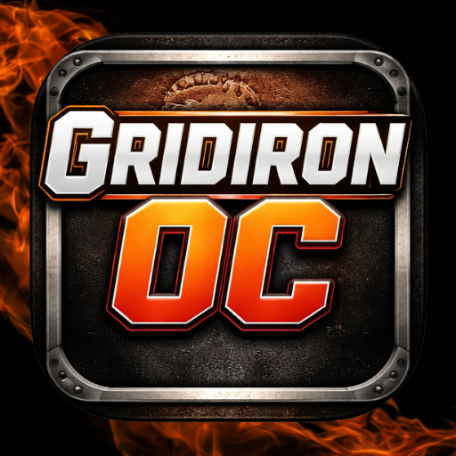

★ TACTICAL FIELD MANUAL & OPERATOR'S COMPENDIUM
DOC-ID: GOC-PROD-2026 // EDITION 2.0

GRIDIRON OC
DESKTOP SMART PLAYCALLING COMPANION
A low-latency, completely on-device situational coordinator engine engineered for competitive football simulation titles. Eliminates playbook stagnation and surfaces high-percentage, context-aware offensive and defensive schemes in real time with zero cloud dependency.
PILLAR 01
ZERO-CLOUD ENGINE
Runs 100% locally on your PC. Offline OCR frame analysis and adaptive play-calling logic operate entirely on your hardware with zero telemetry leaks.
PILLAR 02
FAST RECOMMENDATION
Sub-50ms situational tree evaluates entire 32-team catalogs against field spot, score differential, and opponent defensive coverage habits.
PILLAR 03
AUTONOMOUS OCR INGEST
Capture down, distance, field location, and offensive formation directly from the broadcast scoreboard HUD in a single hotkey press.
1. HARDWARE & SYSTEM REQUIREMENTS
Gridiron OC is optimized for real-time play-clock execution. All computer vision and recommendation engine tasks run locally on your workstation:
| Component |
Minimum Spec |
Recommended Spec (Real-Time Vision & OCR) |
| Operating System |
Windows 10 (64-bit) build 19041+ |
Windows 11 (64-bit) build 22621+ |
| Processor (CPU) |
Intel Core i5-8400 / AMD Ryzen 5 2600 |
Intel Core i7-10700K / AMD Ryzen 7 5800X |
| System Memory |
8 GB Dual-Channel DDR4 |
16 GB Dual-Channel DDR4 / DDR5 |
| Graphics (GPU) |
Intel UHD 630 / Radeon Vega (DirectX 11) |
NVIDIA GeForce GTX 1660 / AMD RX 5600 XT or higher |
| Video Ingest |
Direct3D Window Capture (Madden Borderless) |
DirectShow HDMI Card (Elgato HD60X / 4K60, AVerMedia) |
⚠️ CRITICAL DIRECTX DISPLAY REQUIREMENT
When capturing from Madden running on the same PC, do not enable Exclusive Fullscreen. Exclusive fullscreen causes the OS Desktop Window Manager to yield frame ownership, producing black frames in the video bridge. Always set Madden to Borderless Windowed or Windowed.
2. FIRST-TIME SETUP & BROADCAST CALIBRATION
On initial launch, Gridiron OC presents the Matchup & Broadcast Setup dialog to calibrate teams, game modes, and scoreboard presentation:
❶
Your Team ➔
Selects playbook catalog & team identity.
❷
Opponent ➔
Loads defensive roster tendencies & memory.
❸
HUD Pills ➔
Selects OCR HUD (Default, TNF, SNF, MNF).
❹
Start Game ➔
Initializes live coordinator engine.
3. OFFENSIVE COORDINATOR (OC) WORKSPACE ANATOMY
The primary Offensive Coordinator interface delivers immediate situational command, telemetry tracking, and sub-50ms play recommendations:
❶
OCR Capture ➔
Triggers live HUD situation ingest and play recommendations.
❷
New Game ➔
Resets active telemetry & starts new game ledger.
❸
Last Defense ➔
Quick-log observed shells (Blitz, Man, C1, C2, C3, C4).
❹
Play Call Board ➔
Surfaces instant Top 3 situation recommendations.
❶
Slot 1: Optimal Primary ➔
Tap to confirm primary concept (HB Slam) based on situation & identity fit.
❷
Slot 2: Strategic Counter ➔
Tap to confirm counter look (Inside Zone vs blitz / Cover 9).
❸
Slot 3: Freshness Elasticity ➔
Tap to confirm unexposed play (MTN Flood) for full playbook variety.
4. COORDINATOR STYLES & LIVE OVERLAY SELECTION
Gridiron OC adapts play calling in real time through specialized game situations and line-of-scrimmage overrides:
❶
Normal Mode ➔
Balanced situation calling honoring team baseline.
❷
Run First ➔
Establishes line of scrimmage with heavy run schemes.
❸
Pass First ➔
Attacks through the air & controls the game by pass volume.
❹
Tempo / Spread ➔
Pace and space, quick RPOs, and motion perimeter attacks.
❶
Pass Audible ➔
Re-tags play to quick pass audible (e.g. DBL Outs).
❷
Run Audible ➔
Re-tags play to ground audible (e.g. HB Iso).
❶
Defense Penalty ➔
Offside flag: free play, skips learning noise.
❷
Offense Penalty ➔
False Start: voids snap from variety stats.
5. DEFENSIVE COORDINATOR (DC) OPERATIONS
The DC workspace catalogs over 8,200 authentic NFL defensive plays, matching personnel packages and situational pressure schemes against what the opponent shows at the line:
❶
OCR Capture ➔
Triggers live HUD situation ingest and defensive calls.
❷
Game State ➔
Toggles possession result modal (Punt, Turnover, Downs).
❸
Quarter Toggles ➔
Syncs active quarter (Q1, Q2, Q3, Q4, OT).
❹
Package Call ➔
DC slate surfacing authentic NFL defensive schemes.
DC Tactical Rules & Packaging Intelligence
- Personnel Matching: Selecting Gun or Empty automatically prioritizes Nickel and Dime sub-packages with fast pass rushers; selecting I-Form or Singleback automatically prioritizes Base 4-3/3-4 fronts with run-stopping gap integrity.
- Balanced Pressure Frequencies: Blitz calls are metered to authentic NFL distributions (~28% to 34%), differentiating between 5-man fire zones and cover-0 all-out pressure.
- Strict Situational Gating: Goal Line Defense is strictly reserved for inside the opponent 3-yard line. Prevent Shells are locked to end-of-half prevent situations or 3rd/4th & 25+.
- Slot 3 Defensive Freshness: Like the OC engine, Slot 3 on the DC slate surfaces under-utilized defensive schemes, ensuring varied defensive fronts across all four quarters.
6. IN-GAME STATE MANAGEMENT & DRIVE RESULTS
Gridiron OC tracks every possession transition seamlessly, automatically awarding points and toggling between OC and DC coordinator workspaces:
❶
Touchdown (+6) ➔
Awards +6 and opens the PAT choice modal.
❷
Punt ➔
Logs change of possession and flips workspace to DC.
❶
Interception ➔
Logs defensive takeaway and switches back to OC.
❷
Turnover on Downs ➔
Stops drive on 4th down and restores OC workspace.
❶
Extra Point (+1 pt) ➔
Logs successful kick, awards +1 point, updates score to +7 total.
❷
2-Point Conversion (+2 pts) ➔
Logs successful 2-point conversion, awards +2 points (+8 total).
❸
Missed / No Try (+0 pts) ➔
Leaves touchdown score at +6 without awarding PAT points.
7. LIVE INGEST WORKFLOWS: STEP-BY-STEP FIELD GUIDE
Gridiron OC provides rapid situational input workflows tailored for intense gameplay:
WORKFLOW 1: Autonomous Video OCR
1
Burst Capture (Ctrl+Shift+D)
Trigger frame capture when scoreboard reveals down, distance, and formation.
2
Burst Consensus Analysis
OpenCV parses down/distance grammar, field arrow vector, and formation line.
3
Review when a field is withheld
If the strip says review is required, correct the field and accept. Formation / personnel must be a formation name or five skill players (for example 1RB - 1TE 3WR or empty-backfield 0RB - 1TE 4WR).
4
Instant Play / Package Delivery
Top 3 recommendations surface in the coordinator call sheet once the required fields are accepted.
WORKFLOW 2: Execution & Learning
A
Confirm Play (1, 2, 3)
Click or hotkey to confirm play call; Auto Playcaller confirms automatically if enabled.
B
Audible / Flag Protection
Log Madden flags (Ctrl+P) or line audibles (Ctrl+A) to preserve learning integrity.
C
Log Coverage & Tendencies
Tap observed defensive coverage shells to train adaptive counter algorithms.
8. STRATEGIC "WHY-THIS-CALL" RATIONALE BADGES
| Badge Token |
Strategic Intent |
Football Context & Application |
| Identity Fit |
Core Philosophy |
Matches offensive personnel strengths (e.g. West Coast quick-game, Power Gap run). |
| Setup Payoff |
Sequencing Trigger |
Capitalizes on established early-down run concepts to spring play-action shot plays behind bite angles. |
| Coverage Beater |
Scouting Counter |
Routes mathematically structured to flood the opponent's most frequent coverage shell in this spot. |
| 3rd Down Converter |
Sticks Leverage |
Route stem depths guaranteed to break past the line to gain on critical conversion downs. |
| Hot Read / Blitz |
Pressure Release |
Built-in quick perimeter outlets, smoke screens, or slip screens to punish aggressive blitzes. |
9. POST-GAME COORDINATOR DEBRIEF
Selecting End Game delivers an executive breakdown of your matchup performance:
| Metric |
Analytical Purpose |
| Coordinator Trust Rating |
Percentage of offensive snaps where you executed one of the Top 3 coordinator recommendations. |
| Explosive Efficiency |
Rate of drives yielding 20+ yard chunk plays. |
| Third Down Yield |
Conversion rate across Short (1-2), Medium (3-6), and Long (7+) yardage tiers. |
| Concept Leaders |
Most effective plays exceeding 6.5 yards/play over a minimum 3-snap sample. |
10. KEYBOARD SHORTCUTS & HOTKEYS
| Command |
Global Shortcut |
Function |
| OCR Burst Capture |
Ctrl + Shift + D |
Captures active scoreboard HUD and extracts situation. |
| Switch Workspace |
Ctrl + 1 / Ctrl + 2 |
Instant toggle between Offensive and Defensive Coordinator. |
| Confirm Call |
1, 2, or 3 |
Registers selected recommendation tile to learning ledger. |
| Log Flag / Penalty |
Ctrl + P |
Neutralizes penalized snap from playbook success scoring. |
| Audible Substitution |
Ctrl + A |
Swaps confirmed call with audible executed at the line. |
11. DIAGNOSTICS & TROUBLESHOOTING
- OCR Capture Error
3221226505: Indicates hardware lock on capture device. Quit OBS Studio or Elgato 4K Capture Utility, then relaunch Gridiron OC.
- Bare Digits Recognized (No Field Side): Open Calibrate Capture. Expand the Field Position box slightly leftward to include the up/down directional triangle arrow.
GRIDIRON OC — THE SMART PLAYCALLING COMPANION
COPYRIGHT © 2026 GENNOWGAMER. ALL RIGHTS RESERVED.